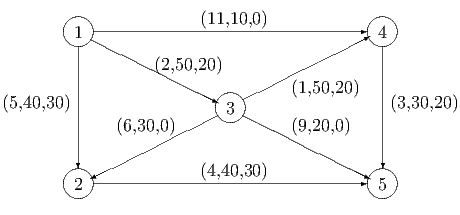

Second Exam, Friday, November 5, 2010.
You may use any result from your notes or a homework that is clearly stated. You may use one sheet of handwritten notes, but no other sources. The exam consists of five questions, and lasts one hundred and ten minutes.
either the system Ax > 0 has a solution,
of the system AT y = 0, y ≥ 0, and y≠0 has a solution,
but not both systems have solutions.

Add the constraint x2 + x3 - 4x4 ≥ 4 and reoptimize using dual simplex.